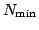
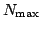

|
|||||||||||||||||
|
Server time: 2006-01-10 05:51:31 |
SPOJ Problem Set134. Phony PrimesProblem code: PHONY
You are chief debugger for Poorly Guarded Privacy, Inc. One of the top
selling product, ReallySecureAgent©, seems to have a problem with
its prime number generator. It produces from time to time bogus primes
N.
Input
Each test case contains one line. On this line are written two
integers  and  separated
by a blank. The end of the input is signalled by a line containing two
zeros. The number of test cases is approximately 2000.
OutputFor each test case, output the list of phony primes in increasing order, one per line. If there are no phony primes in the interval, then simply output none on a line. ExampleInput:10 2000 20000 21000 0 0 Output:561 1105 1729 none
|
||||||||||||||||
| |||||||||||||||||